fastmath.random
Various random and noise functions.
Namespace defines various random number generators (RNGs), different types of random functions, sequence generators and noise functions.
RNGs
You can use a selection of various RNGs defined in Apache Commons Math library.
Currently supported RNGs:
:jdk- default java.util.Random:mersenne- MersenneTwister:isaac- ISAAC:well512a,:well1024a,:well19937a,:well19937c,:well44497a,:well44497b- several WELL variants
To create your RNG use rng multimethod. Pass RNG name and (optional) seed. Returned RNG is equipped with RNGProto protocol with methods: irandom, lrandom, frandom drandom, grandom, brandom which return random primitive value with given RNG.
(let [rng (rng :isaac 1337)]
(irandom rng))
For conveniency default RNG (:mesenne) with following functions are created: irand, lrand, frand, drand, grand, brand.
Each prefix denotes returned type:
- i - int
- l - long
- f - float
- d - double
- g - gaussian (double)
- b - boolean
Check individual function for parameters description.
Random Vector Sequences
Couple of functions to generate sequences of numbers or vectors. You can generate sequence of double, Vec2, Vec3 or Vec4 types. Just pass the size to creator function.
To create generator call sequence-generator with generator name and vector size [1,4]. Following generators are available:
:halton- Halton low-discrepancy sequence; range [0,1]:sobol- Sobol low-discrepancy sequence; range [0,1]:sphere- uniformly random distributed on unit sphere:gaussian- gaussian distributed (mean=0, stddev=1):default- uniformly random; range:[0,1]
After creation you get function equivalent to repeatedly.
Noise
List of continuous noise functions (1d, 2d and 3d):
:value- value noise:gradient- gradient noise (improved Ken Perlin version):simplex- simplex noise
First two (:value and :gradient) can use 4 different interpolation types: :none, :linear, :hermite (cubic) and :quintic.
All can be used as into:
- Noise - pure noise value, create with single-noise
- FBM - fractal brownian motion, create with fbm-noise
- Billow - billow noise, billow-noise
- RidgedMulti - ridged multi, ridgedmulti-noise
Noise creation requires detailed configuration which is simple map of following keys:
:seed- seed as integer:noise-type- type of noise::value,:gradient(default),:simplex:interpolation- type of interpolation (for value and gradient)::none,:linear,:hermite(default) or:quintic:octaves- number of octaves for combined noise (like FBM), default: 6:lacunarity- scaling factor for combined noise, default: 2.00:gain- amplitude scaling factor for combined noise, default: 0.5:normalize?- should be normalized to[0,1]range (true, default) or to[-1,1]range (false)
For usage convenience 3 ready to use functions are prepared. Return is normalized to [0,1] range:
- noise - Perlin Noise (gradient noise, 6 octaves, quintic interpolation)
- vnoise - Value Noise (as in Processing, 6 octaves, hermite interpolation)
- simplex - Simpled Noise (6 octaves)
Discrete Noise
discrete-noise is a 1d or 2d hash function for given integers. Returns double from [0,1] range.
Distribution
Various real and integer distributions. See DistributionProto and RNGProto for functions.
To create distribution call distribution multimethod with name as a keyword and map as parameters.
Categories
- Distributions: cdf distribution distributions-list icdf likelihood log-likelihood lower-bound lpdf mean pdf probability sample upper-bound variance
- Random sequence generation: sequence-generator sequence-generators-list
- Noise functions: billow-noise discrete-noise fbm-noise interpolations noise noise-types random-noise-cfg random-noise-fn ridgedmulti-noise simplex single-noise vnoise
- Random number generation: ->seq brand brandom default-rng drand drandom frand frandom grand grandom irand irandom lrand lrandom randval rng rngs-list set-seed!
Code snippets
Show RNGProto methods.
(defn rngproto-snippet
[f params & opts]
(let [rng (rng :well44497b)] (f rng)))billow-noise
Examples
Usage
(let [n (billow-noise {:seed 12345, :interpolation :none})]
(n 0.5 1.1 -1.3))
;;=> 0.160317460317460362d noise

brand
Random boolean with Mersenne Twister RNG.
Examples
Usage
(brand)
;;=> false
(brand 0.1)
;;=> falseCount number of
truevalues with probability 0.15
(count (filter true? (repeatedly 100000 (fn* [] (brand 0.15)))))
;;=> 14765default-rng
Default RNG - Mersenne Twister
Examples
Usage
(set-seed! default-rng 111)
;;=> org.apache.commons.math3.random.MersenneTwister@3997a8ca
(irandom default-rng)
;;=> 1470976170
(set-seed! default-rng 999)
;;=> org.apache.commons.math3.random.MersenneTwister@3997a8ca
(irandom default-rng)
;;=> -1716016164
(set-seed! default-rng 111)
;;=> org.apache.commons.math3.random.MersenneTwister@3997a8ca
(irandom default-rng)
;;=> 1470976170discrete-noise
(discrete-noise X Y)(discrete-noise X)Discrete noise. Parameters:
- X (long)
- Y (long, optional)
Returns double value from [0,1] range
Examples
Example calls
(discrete-noise 123 444)
;;=> 0.8660251823561383
(discrete-noise 123 444)
;;=> 0.8660251823561383
(discrete-noise 123 445)
;;=> 0.4702831345937602
(discrete-noise 123)
;;=> 0.28831296287864117Draw noise for [0-180] range.

distribution
multimethod
Create distribution object.
First parameter is distribution as a :key. Second parameter is a map with configuration. All distributions accept rng under :rng key (default: default-rng) and some of them accept inverse-cumm-accuracy (default set to 1e-9).
Distributions should be called using DistributionProto and RNGProto.
The rest parameters goes as follows:
Real distributions
:beta-:alpha(default: 2.0) and:beta(default: 5.0):cauchy-:mean(default: 0.0) and:scale(default: 1.0):chi-squared-:degrees-of-freedom(default: 1.0):empirical-:bean-count(default: 1000) and:dataas a sequence:enumerated-real-:dataas a sequence and:probabilitiesas a optional sequence:exponential-:mean(default: 1.0):f-:numerator-degrees-of-freedom(default: 1.0) and:denominator-degrees-of-freedom(default: 1.0):gamma-:shape(default: 2.0) and:scale(default: 2.0):gumbel-:mu(default: 1.0) and:beta(default: 2.0):laplace-:mu(default: 1.0) and:beta(default: 2.0):levy-:mu(default: 0.0) and:c(default: 1.0):logistic-:mu(default: 1.0) and:s(default: 2.0):log-normal-:scale(default: 1.0) and:shape(default: 1.0):nakagami-:mu(default: 1.0) and:omega(default: 1.0):normal-:mu(default: 0.0) and:sd(default: 1.0):pareto-:scale(default: 1.0) and:shape(default: 1.0):t-:degrees-of-freedom(default: 1.0):triangular-:a(default: -1.0),:b(default: 0.0) and:c(default: 1.0):uniform-real-:lower(default: 0.0) and:upper(default: 1.0):weibull-:alpha(default: 2.0) and:beta(default: 1.0)
Integer distributions
:binomial-:trials(default: 20) and:p(default: 0.5):enumerated-int-:dataand:probabilitiesas a sequences:geometric-:p(default: 0.5):hypergeometric-:population-size(default: 100),:number-of-successes(default: 50) and:sample-size(default: 25):pascal-:r(default: 5) and:p(default: 0.5):poisson-:p(default: 0.5),:epsilon(default: 1.0e-12),:max-iterations(default: 10000000):uniform-int-:lower(default: 0) and:upper(default:Integer/MAX_VALUE):zipf-:number-of-elements(default: 100) and:exponent(default: 3.0)
Examples
Usage
(distribution :beta)
;;=> org.apache.commons.math3.distribution.BetaDistribution@3625205c
(distribution :beta {:alpha 1.0, :beta 1.0})
;;=> org.apache.commons.math3.distribution.BetaDistribution@66133fab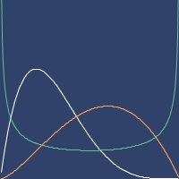PDFs of beta
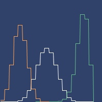PDFs of binomial
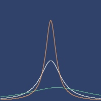PDFs of cauchy
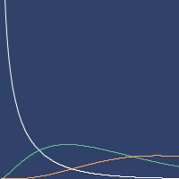PDFs of chi-squared
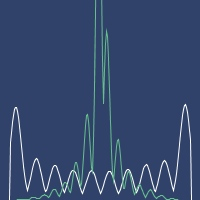PDFs of empirical
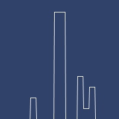PDFs of enumerated-int
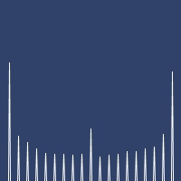PDFs of enumerated-real
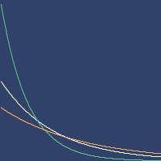PDFs of exponential
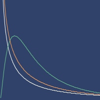PDFs of f
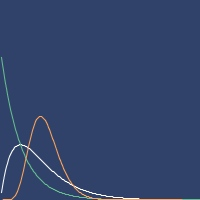PDFs of gamma
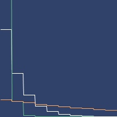PDFs of geometric
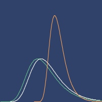PDFs of gumbel
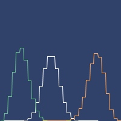PDFs of hypergeometric
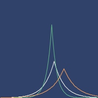PDFs of laplace
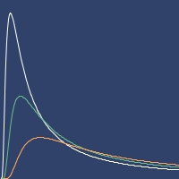PDFs of levy
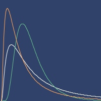PDFs of log-normal
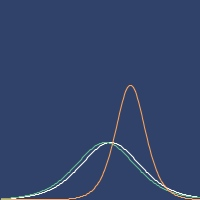PDFs of logistic
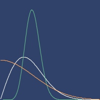PDFs of nakagami
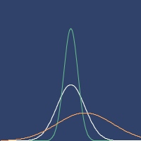PDFs of normal
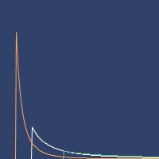PDFs of pareto
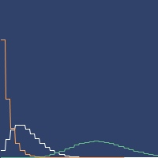PDFs of pascal
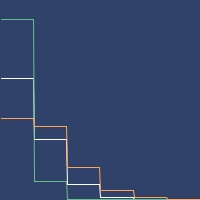PDFs of poisson
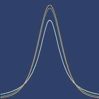PDFs of t
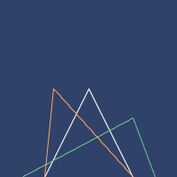PDFs of triangular
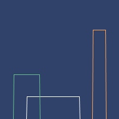PDFs of uniform-int
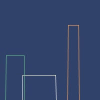PDFs of uniform-real
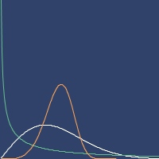PDFs of weibull
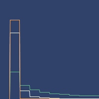PDFs of zipf
DistributionProto
protocol
Get information from distributions.
members
cdf
(cdf d v)(cdf d v1 v2)Cumulative probability.
Examples
Usage
(cdf (distribution :gamma) 1)
;;=> 0.09020401043104985
(cdf (distribution :gamma) 1 4)
;;=> 0.5037901398591113icdf
(icdf d p)Inversed cumulative probability
Examples
Usage
(icdf (distribution :gamma) 0.5)
;;=> 3.3566939800333233likelihood
(likelihood d vs)Likelihood of samples
Examples
Usage
(likelihood (distribution :gamma) [10 0.5 0.5 1 2])
;;=> 4.452548659934162E-6log-likelihood
(log-likelihood d vs)Log likelihood of samples
Examples
Usage
(log-likelihood (distribution :gamma) [10 0.5 0.5 1 2])
;;=> -12.322033893165353lower-bound
(lower-bound d)Lower value
Examples
Usage
(lower-bound (distribution :gamma))
;;=> 0.0lpdf
(lpdf d v)Log density
Examples
Usage
(lpdf (distribution :gamma) 1)
;;=> -1.8862943611198908mean
(mean d)Mean
Examples
Usage
(mean (distribution :gamma))
;;=> 4.0(pdf d v)Density
Examples
Usage
(pdf (distribution :gamma) 1)
;;=> 0.15163266492815838probability
(probability d v)Probability (PMF)
sample
(sample d)Returns random sample.
Examples
Random value from distribution
(sample (distribution :gamma))
;;=> 7.092885963905091upper-bound
(upper-bound d)Higher value
Examples
Usage
(upper-bound (distribution :gamma))
;;=> Infinityvariance
(variance d)Variance
Examples
Usage
(variance (distribution :gamma))
;;=> 8.0distributions-list
List of distributions.
Examples
Number and list of distributions
distributions-list
;;=> #{:beta :binomial :cauchy :chi-squared :empirical :enumerated-int
;;=> :enumerated-real :exponential :f :gamma :geometric :gumbel
;;=> :hypergeometric :laplace :levy :log-normal :logistic :nakagami :normal
;;=> :pareto :pascal :poisson :t :triangular :uniform-int :uniform-real
;;=> :weibull :zipf}
(count distributions-list)
;;=> 28drand
(drand)(drand mx)(drand mn mx)Random double number with Mersenne Twister RNG.
Examples
Usage
(drand)
;;=> 0.051925907821719575
(drand 10)
;;=> 7.374634547970063
(drand 10 20)
;;=> 19.527613226950905fbm-noise
Examples
Usage
(let [n (fbm-noise {:interpolation :linear, :noise-type :value})]
(n 0.5 1.1 -1.3))
;;=> 0.66224311010573312d noise

frand
Random float number with Mersenne Twister RNG.
Examples
Usage
(frand)
;;=> 0.77010703
(frand 10)
;;=> 9.9665365
(frand 10 20)
;;=> 10.294925grand
(grand)(grand stddev)(grand mean stddev)Random gaussian double number with Mersenne Twister RNG.
Examples
Usage
(grand)
;;=> -0.4862622912541938
(grand 10)
;;=> 12.854666060724423
(grand 10 20)
;;=> 15.576946934640311interpolations
List of possible noise interpolations as a map of names and values.
Examples
List of names (keys)
(keys interpolations)
;;=> (:none :linear :hermite :quintic)irand
(irand)(irand mx)(irand mn mx)Random integer number with Mersenne Twister RNG.
Examples
Usage
(irand)
;;=> 1598292090
(irand 10)
;;=> 5
(irand 10 20)
;;=> 14lrand
(lrand)(lrand mx)(lrand mn mx)Random long number with Mersenne Twister RNG.
Examples
Usage
(lrand)
;;=> 5686728619012277064
(lrand 10)
;;=> 0
(lrand 10 20)
;;=> 16noise
(noise x)(noise x y)(noise x y z)Create improved Perlin Noise.
6 octaves, quintic interpolation.
Examples
Usage
(noise 3.3)
;;=> 0.24022704761904784
(noise 3.3 1.1)
;;=> 0.5891424166603173
(noise 3.3 0.0 -0.1)
;;=> 0.57072228335746032d noise

noise-types
List of possible noise types as a map of names and values.
Examples
List of names (keys)
(keys noise-types)
;;=> (:value :gradient :simplex)random-noise-cfg
(random-noise-cfg)Create random noise configuration.
Examples
Random configuration
(random-noise-cfg)
;;=> {:gain 0.7775713724640989,
;;=> :interpolation :quintic,
;;=> :lacunarity 1.7314283620797077,
;;=> :noise-type :value,
;;=> :normalize? true,
;;=> :octaves 6,
;;=> :seed -1208843915}random-noise-fn
(random-noise-fn cfg)(random-noise-fn)Create random noise function from all possible options.
Optionally provide own configuration cfg. In this case one of 4 different blending methods will be selected.
Examples
Create function
(random-noise-fn)
;;=> fastmath.random$single_noise$fn__30118@4b808
(random-noise-fn (random-noise-cfg))
;;=> fastmath.random$ridgedmulti_noise$fn__30130@7bef169aOne

Two

Three

randval
macro
(randval v1 v2)(randval prob v1 v2)Retrun value with given probability (default 0.5)
Examples
Usage
(randval :val-one :val-two)
;;=> :val-two
(randval 0.001 :low-probability :high-probability)
;;=> :high-probabilityCheck probability of nil (should return value around 1000).
(count (filter nil?
(repeatedly 1000000 (fn* [] (randval 0.001 nil 101)))))
;;=> 1054ridgedmulti-noise
Examples
Usage
(let [n
(ridgedmulti-noise
{:octaves 3, :lacunarity 2.1, :gain 0.7, :noise-type :simplex})]
(n 0.5 1.1 -1.3))
;;=> 0.76999434803830642d noise

rng
multimethod
Examples
Creating
(rng :mersenne)
;;=> org.apache.commons.math3.random.MersenneTwister@2827ed71
(rng :isaac 1234)
;;=> org.apache.commons.math3.random.ISAACRandom@293e6c5dUsing
(irandom (rng :mersenne 999) 15 25)
;;=> 17RNGProto
protocol
Defines set of random functions for different RNGs or distributions returning primitive values.
members
->seq
(->seq t)(->seq t n)Returns sequence of random samples limited to optional n values.
Examples
Sequence of random values from distribution
(->seq (distribution :gamma) 5)
;;=> (6.152438466102623
;;=> 2.7771202315249273
;;=> 3.0256536277031296
;;=> 0.8402225324676831
;;=> 4.23142209664185)brandom
(brandom t)(brandom t thr)Boolean random. Returns true or false with equal probability. You can set probability for true setting thr (from [0-1] range).
See brand.
Examples
boolean
(rngproto-snippet brandom ...)
;;=> falsedrandom
(drandom t)(drandom t mx)(drandom t mn mx)Random double.
For RNGs: As default returns random double from [0,1) range. When mx is passed, range is set to [0, mx). When mn is passed, range is set to [mn, mx).
See drand.
For distributions, just returns random double (call without parameters).
Examples
double
(rngproto-snippet drandom ...)
;;=> 0.5735874149002054Double random value from distribution
(drandom (distribution :gamma))
;;=> 7.418770750567213frandom
(frandom t)(frandom t mx)(frandom t mn mx)Random float.
For RNGs: As default returns random float from [0,1) range. When mx is passed, range is set to [0, mx). When mn is passed, range is set to [mn, mx).
See frand.
For distributions, just returns random float (call without parameters).
Examples
float
(rngproto-snippet frandom ...)
;;=> 0.87396944Float random value from distribution (sample cast to
float)
(frandom (distribution :gamma))
;;=> 1.7654098grandom
(grandom t)(grandom t std)(grandom t mean std)Random double from gaussian distribution. As default returns random double from N(0,1). When std is passed, N(0,std) is used. When mean is passed, distribution is set to N(mean, std).
See grand.
Examples
gaussian double
(rngproto-snippet grandom ...)
;;=> -1.4922570849471024irandom
(irandom t)(irandom t mx)(irandom t mn mx)Random integer.
For RNGs: As default returns random integer from full integer range. When mx is passed, range is set to [0, mx). When mn is passed, range is set to [mn, mx).
See irand.
For distributions, just returns random integer (call without parameters).
Examples
integer
(rngproto-snippet irandom ...)
;;=> -35254183Integer random value from distribution (sample cast to
int)
(irandom (distribution :gamma))
;;=> 4lrandom
(lrandom t)(lrandom t mx)(lrandom t mn mx)Random long.
For RNGs: As default returns random long from full long range. When mx is passed, range is set to [0, mx). When mn is passed, range is set to [mn, mx).
See lrand.
For distributions, just returns random long (call without parameters).
Examples
long
(rngproto-snippet lrandom ...)
;;=> 1551602126725503983Long random value from distribution (sample cast to
long)
(lrandom (distribution :gamma))
;;=> 11set-seed!
(set-seed! t v)Sets seed. Returns RNG or distribution itself.
Examples
Set seed for the RNG object
(let [rng (rng :isaac)]
(set-seed! rng 1234)
(irandom rng 10 15))
;;=> 10
;; Test: ok.rngs-list
List of all possible RNGs.
Examples
Contains
(sort rngs-list)
;;=> (:isaac :jdk :mersenne
;;=> :well1024a :well19937a
;;=> :well19937c :well44497a
;;=> :well44497b :well512a)sequence-generator
multimethod
Create Sequence generator. See sequence-generators-list for names. Parameter size describes number of dimensions (1-4).
Values are from following values:
:halton,:sobol,:default- range[0-1]:gaussian- fromN(0,1)distribution:sphere- from surface of unit sphere (ie. euclidean distance from origin equals 1.0)
Examples
Usage (2d)
(let [gen (sequence-generator :halton 2)] (take 5 (gen)))
;;=> (#vec2 [0.0, 0.0]
;;=> #vec2 [0.5, 0.6666666666666666]
;;=> #vec2 [0.25, 0.3333333333333333]
;;=> #vec2 [0.75, 0.2222222222222222]
;;=> #vec2 [0.125, 0.8888888888888888])Usage (1d)
(let [gen (sequence-generator :sobol 1)] (take 5 (gen)))
;;=> (0.0 0.5 0.75 0.25 0.375)Halton plot (1000 samples)

Sobol plot (1000 samples)

Sphere plot (1000 samples)

Gaussian plot (1000 samples)

Default plot (1000 samples)

sequence-generators-list
List of random sequence generator. See sequence-generator.
Examples
Generator names.
(sort sequence-generators-list)
;;=> (:default :gaussian :halton :sobol :sphere)simplex
(simplex x)(simplex x y)(simplex x y z)Create Simplex noise. 6 octaves.
Examples
Usage
(simplex 3.3)
;;=> 0.374929014742857
(simplex 3.3 1.1)
;;=> 0.3055475567801085
(simplex 3.3 0.0 -0.1)
;;=> 0.46685132536416462d noise

single-noise
Examples
Usage
(let [n (single-noise {:interpolation :linear})] (n 0.5 1.1 -1.3))
;;=> 0.58452d noise

vnoise
(vnoise x)(vnoise x y)(vnoise x y z)Value Noise.
6 octaves, Hermite interpolation (cubic, h01).
Examples
Usage
(vnoise 3.3)
;;=> 0.6135150018747613
(vnoise 3.3 1.1)
;;=> 0.24807822235925214
(vnoise 3.3 0.0 -0.1)
;;=> 0.40717359866600092d noise